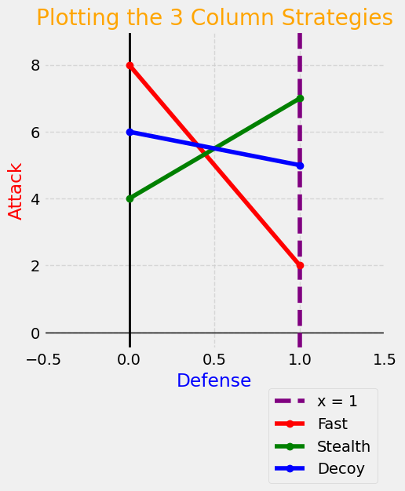
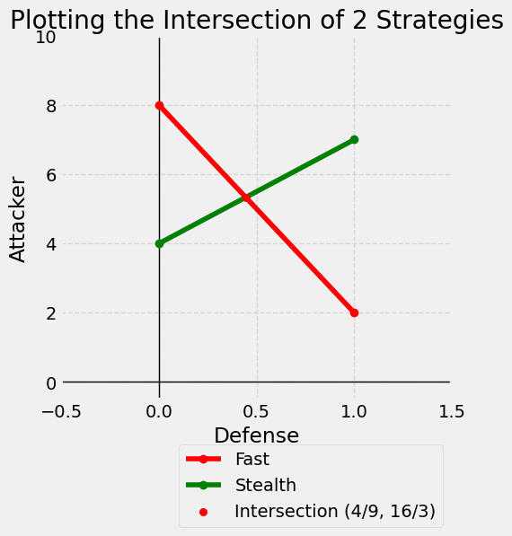

Graphical Method: \(n\times 2\)#
When the column player has 2 strategies but the row player has \(n>2\) strategies, the graphical method reverses due to the fact the column player is minimizing. This means the best strategic choice will lie along the lower envelope of graph.
## Do not change this cell, only execute it.
## This cell initializes Python so that pandas, numpy and scipy packages are ready to use.
import datascience
%matplotlib inline
import matplotlib.pyplot as plots
plots.style.use('fivethirtyeight')
import numpy as np
import scipy as sp
import math
import scipy.stats as stats
from fractions import Fraction
C:\Users\robbs\anaconda3\envs\GameTheory\Lib\site-packages\datascience\maps.py:13: UserWarning: pkg_resources is deprecated as an API. See https://setuptools.pypa.io/en/latest/pkg_resources.html. The pkg_resources package is slated for removal as early as 2025-11-30. Refrain from using this package or pin to Setuptools<81.
import pkg_resources
Example: Missile Defense#
In a missile defense scenario, the Attacker (Row Player) chooses from \(\textbf{\textcolor{blue}{n}}\) different warhead configurations, while the Defender (Column Player) chooses between \(\textbf{\textcolor{red}{2}}\) interceptor systems. In this model, the values in the matrix represent the probability of a missile successfully evading the interceptors.
The game is zero-sum. Thus, the Attacker wishes to maximize this probability while the Defender wants to minimize it. The game matrix is shown below with whole number percentages of success are represented as single digits. For example, an \(8\) in the game matrix indicates an \(80\%\) success rate, and so on.
The attackers have three warhead types (Fast, Stealthy, Decoy-Heavy) against two interceptor systems (High-Altitude Kinetic vs. Low-Altitude Laser). The decoy-heavy attack uses a combination of real and fake warheads so that the interceptors chase kill the dummy warheads rather than the real threat.
The payoff \(a_{ij}\) represents the hit probability for warhead \(i\) against interceptor \(j\). Note that the percentages do not necessarily sum to \(100\%\). Each entry represents the specific success rate given the attacker’s choice and the defense’s choice.
The key point in the graph below is that the defender will play along the lower envelope in an attempt to maximize the outcomes.
plots.figure(figsize=(5,5))
plots.axhline(0, color='black', linewidth=1)
plots.axvline(0, color='black', linewidth=2)
plots.xlim(-0.5, 1.5); plots.ylim(-0.5, 9)
plots.axvline(x=1, color='purple', linestyle='--', label='x = 1')
points1 = ((0, 8), (1, 2))
plots.plot(*zip(*points1), marker='o', color='red', label='Fast')
points2 = ((0, 4), (1, 7))
plots.plot(*zip(*points2), marker='o', color='green', label='Stealth')
points3 = ((0, 6), (1, 5))
plots.plot(*zip(*points3), marker='o', color='blue', label='Decoy')
# Add labels and title
plots.xlabel('Defense', color='blue')
plots.ylabel('Attack', color='red')
plots.title('Plotting the 3 Column Strategies', color='orange')
# Add a grid, add legend, and place legend below figure.
plots.grid(True, linestyle='--', alpha=0.7)
plots.legend(loc='upper right', bbox_to_anchor=(1, -0.1),framealpha=0.75)
plots.show()

Solution#
The defense will play along the lower envelope, so the correct proportion will be found as the \(x\)-coordinate of the piont of intersection of the red (fast) and green (stealth) strategies. Thus, the game to be solved using oddments is shown below:
The row oddments are \(6\) and \(3\), and thus the optimal strategy set is given by:
The column oddments are \(4\) and \(5\), and the corresponding optimal strategy set is given by:
The value of the game will be
Solution with Graphing#
We need a function to calculate two things
the slope between two points
the \(y\)-intercept of the line between those two points.
That function returns \(m\) and \(b\), the coefficents needed to write the line in standard slope-intercept form:
That function is shown below.
def get_slope_int(p1, p2):
m = (p2[1] - p1[1]) / (p2[0] - p1[0])
b = p1[1] - m * p1[0]
return m, b
In our graphics code, after defining the two lines by the two points on those lines, we can graph the intersection and calculate the coordinates of the intersection as shown below.
plots.figure(figsize=(5,5))
plots.axhline(0, color='black', linewidth=1)
plots.axvline(0, color='black', linewidth=1)
plots.xlim(-0.5, 1.5); plots.ylim(-0.5, 10)
points1 = ((0, 8), (1, 2))
plots.plot(*zip(*points1), marker='o', color='red', label='Fast')
points2 = ((0, 4), (1, 7))
plots.plot(*zip(*points2), marker='o', color='green', label='Stealth')
m1, b1 = get_slope_int(points1[0], points1[1])
m2, b2 = get_slope_int(points2[0], points2[1])
x_0 = (b2 - b1) / (m1 - m2)
y_0 = m1 * x_0 + b1
# Rationalize the values
rx = Fraction(x_0).limit_denominator()
ry = Fraction(y_0).limit_denominator()
plots.scatter(x_0, y_0, color='red', label=f'Intersection ({rx}, {ry})', zorder=3)
plots.xlabel('Defense')
plots.ylabel('Attacker')
plots.title('Plotting the Intersection of 2 Strategies')
plots.grid(True, linestyle='--', alpha=0.7)
plots.legend(loc='upper right', bbox_to_anchor=(1, -0.1),framealpha=0.75)
plots.show()

Note how we confirmation from the intersection of \((4/9, 16/3)\) that our optimal strategy proportion for the defense was correct as was our value of the game.